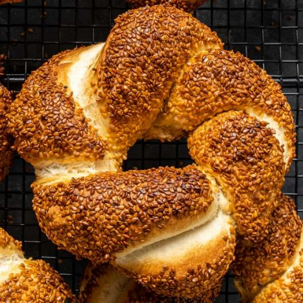

Main page
Simit

Description
Simit is the most famous street food in Turkey. It is crunchy and nutty on the outside and soft and a little chewy on the inside. Sesame seed coated simits make the best breakfast in this world when accompanied by cheese, tomatoes, cucumber and a cup of tea.
Ingredients
For the dough:
- 500g (3 + ¼ cup) flour
- 2 teaspoon dry instant yeast
- 1 teaspoon salt
- 300ml warm water
For the coating:
- ½ cup molasses (grape or date)
- ¼ cup water
- 1 tablespoon flour
- 300g (about 1 and ½ cups) toasted sesame seeds
Instructions
Make the dough:
- In a large mixing bowl, whisk together the flour, yeast and salt.
- Gradually pour in the water and mix it with your hand. Knead it for 5 minutes or until you get a smooth and non-sticky, elastic dough.
- AlternatCover it and let it rise for about 1 hour, until it doubles in size.ively, you can use a stand mixer with a dough hook for this step.
- Cover it and let it rise for about 1 hour, until it doubles in size.
Prepare the coating:
- In a medium sized bowl, whisk together the molasses, water and flour. Set it aside.
- Put the sesame seeds in another bowl. Put it aside. If the sesame seeds are raw, toast them in a pan beforehand.
Shape the simit dough:
- When the dough doubles in size after 1 hour, punch it down and transfer on a floured surface. Shape it into a log and cut it into 6 equal pieces. And then cut each piece into two. You will have 12 pieces in total.
- Grab two pieces and roll them into a rope, 20 inches/50cm in length.
- Put these side by side and stick the ends by pinching.
- Twist in opposite directions to make a braid.
- Combine the two ends by pinching them together and make a ring.
- Repeat this for the remaining dough balls.
Coat the simit dough and bake:
- Preheat the oven at 425C/220C. Line a baking sheet with parchment paper and put it aside.
- Soak the simit ring into the molasses mixture first and then put it into the sesame seed bowl. Transfer onto a parchment paper lined baking sheet and bake for 15-20 minutes, until golden.
Main page